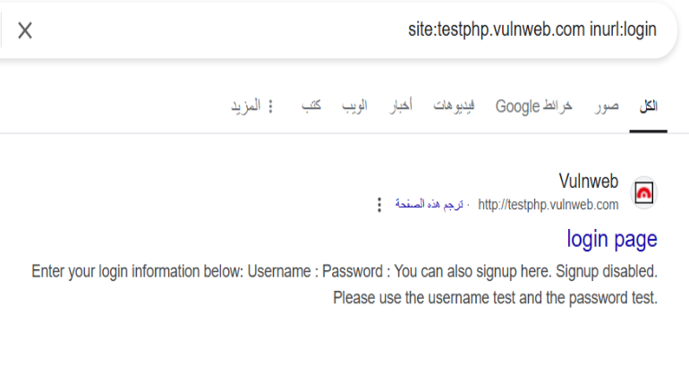

1. Explain Footprinting Concepts
(شرح مفاهيم البصمة الرقمية)
What is Footprinting?
(ما هي البصمة الرقمية؟)
Passive Footprinting
Gathering information without interacting directly with the target (e.g., public records).
(جمع المعلومات دون التفاعل المباشر مع الهدف، مثل السجلات العامة)
Active Footprinting
Involves direct interaction with the target, such as sending queries to systems.
(يتضمن التفاعل المباشر مع الهدف، مثل إرسال استعلامات إلى الأنظمة)
Information Obtained in Footprinting
(المعلومات التي يتم الحصول عليها في البصمة الرقمية)
Organization Information
Details about employees, telephone numbers, branch locations, technologies used, and public-facing documents.
(تفاصيل عن الموظفين وأرقام الهواتف ومواقع الفروع والتقنيات المستخدمة والمستندات العامة)
Network Information
Domain names, sub-domains, network topology, IP addresses, routers, and DNS records.
(أسماء النطاقات والنطاقات الفرعية وبنية الشبكة وعناوين IP والموجهات وسجلات DNS)
System Information
Web server OS, server locations, public email addresses, usernames, and passwords.
(نظام تشغيل الخادم ومواقع الخوادم وعناوين البريد الإلكتروني العامة وأسماء المستخدمين وكلمات المرور)
Footprinting Methodology
(منهجية البصمة الرقمية)
Search Engines
Using advanced search techniques to locate sensitive data.
(استخدام تقنيات البحث المتقدمة لتحديد البيانات الحساسة)
Web Services
Extracting metadata and information from web services.
(استخراج البيانات الوصفية والمعلومات من خدمات الويب)
Social Networking
Analyzing social media profiles and interactions.
(تحليل ملفات التواصل الاجتماعي والتفاعلات)
Website Footprinting
Examining website structures and extracting metadata.
(فحص هياكل المواقع واستخراج البيانات الوصفية)
Email Footprinting
Tracking email communication and analyzing headers.
(تتبع اتصالات البريد الإلكتروني وتحليل الرؤوس)
DNS Footprinting
Interrogating DNS records to gather information about domain architecture.
(استجواب سجلات DNS لجمع المعلومات حول بنية النطاق)
2. Demonstrate Footprinting through Search Engines
(إظهار البصمة الرقمية عبر محركات البحث)
What is Google Hacking?
(ما هي القرصنة باستخدام جوجل؟)
Google hacking is used to extract sensitive or hidden information by leveraging advanced search operators.
(تستخدم القرصنة باستخدام جوجل لاستخراج المعلومات الحساسة أو المخفية باستخدام مشغلات البحث المتقدمة)
Popular Advanced Search Operators
(مشغلات البحث المتقدمة الشائعة)
[cache:]
Displays the web pages stored in Google’s cache.
(يعرض صفحات الويب المخزنة في ذاكرة التخزين المؤقت لجوجل)
[link:]
Lists web pages that link to a specified web page.
(يسرد صفحات الويب التي ترتبط بصفحة ويب محددة)
[related:]
Finds web pages similar to a given web page.
(يجد صفحات ويب مشابهة لصفحة ويب معينة)
[site:]
Restricts search results to websites within a specific domain.
(يحدد نتائج البحث لمواقع الويب ضمن نطاق معين)
3. Google Hacking Database (GHDB)
(قاعدة بيانات القرصنة باستخدام جوجل)
What is the Google Hacking Database (GHDB)?
(ما هي قاعدة بيانات القرصنة باستخدام جوجل؟)
The GHDB is an authoritative resource that contains a collection of Google dorks. It leverages the advanced search capabilities of Google to uncover sensitive or hidden information.
(GHDB هي مصدر موثوق يحتوي على مجموعة من استعلامات جوجل المتقدمة. تستخدم إمكانيات البحث المتقدمة في جوجل للكشف عن المعلومات الحساسة أو المخفية)
Google Dorks
(استعلامات جوجل المتقدمة)
Activity 1
Query: site:testphp.vulnweb.com inurl:login
Explanation: Restricts the search to the target domain and searches for pages with "login" in the URL.
(يحدد البحث للنطاق الهدف ويبحث عن الصفحات التي تحتوي على "login" في الرابط)
Activity 2
Query: site:testphp.vulnweb.com filetype:pdf
Explanation: Searches for PDF documents within the target domain.
(يبحث عن مستندات PDF ضمن النطاق الهدف)
Activity 3
Query: site:testphp.vulnweb.com intitle:"Index of /"
Explanation: Finds open directories with directory indexing enabled.
(يجد الدلائل المفتوحة مع تفعيل فهرسة الدلائل)